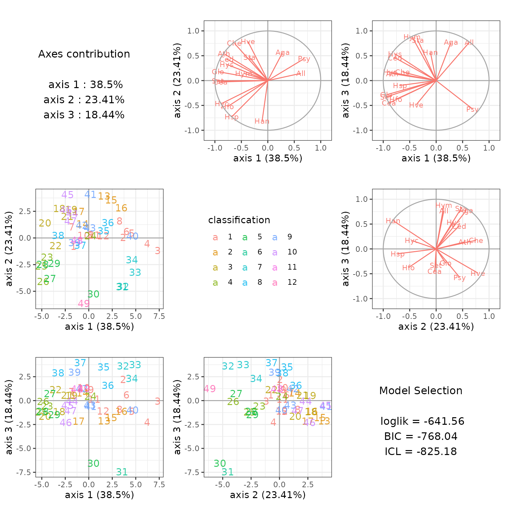
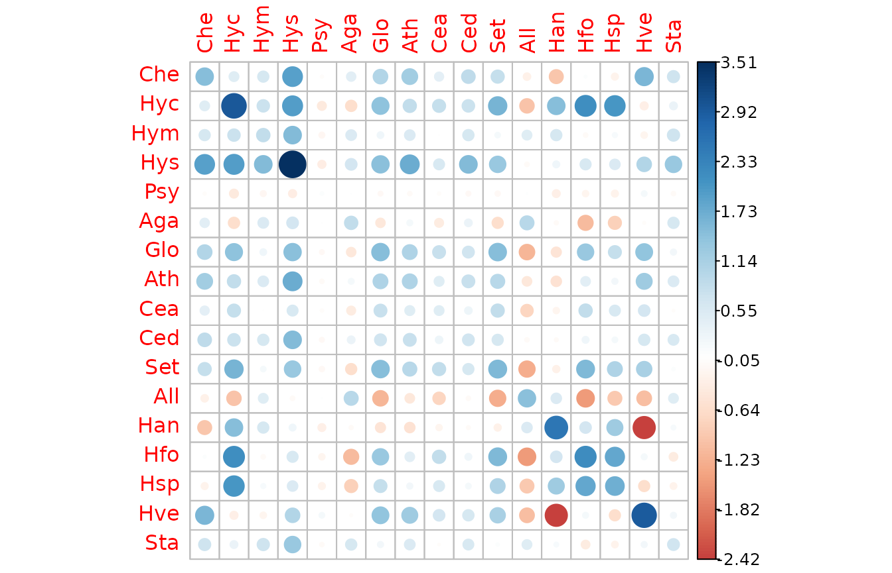
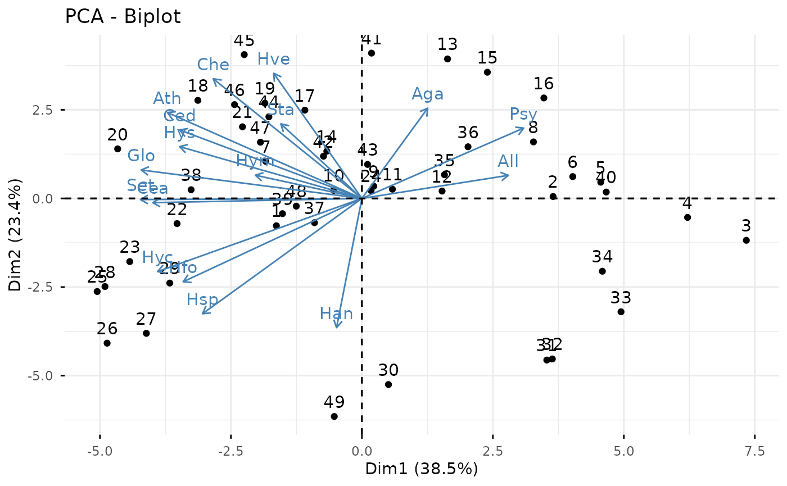
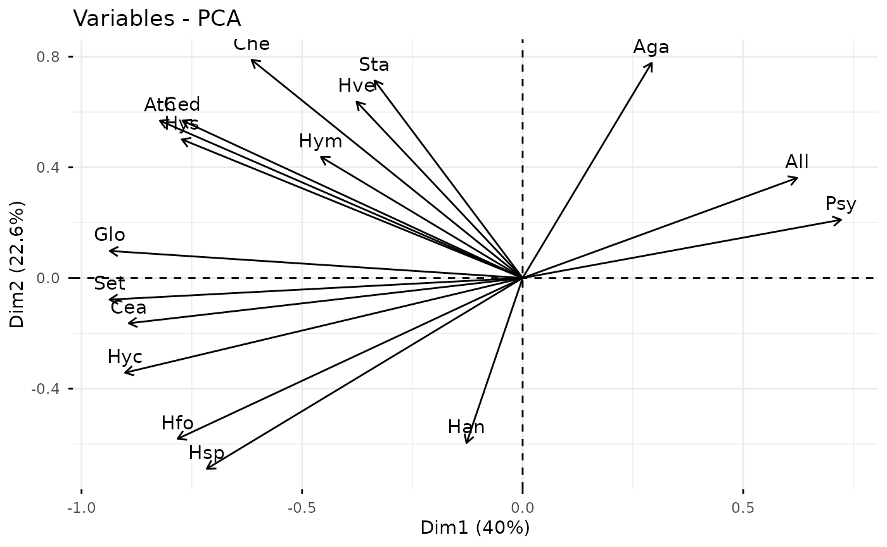
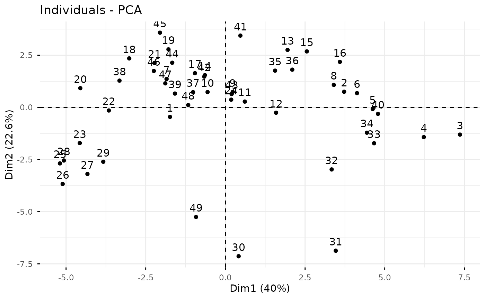
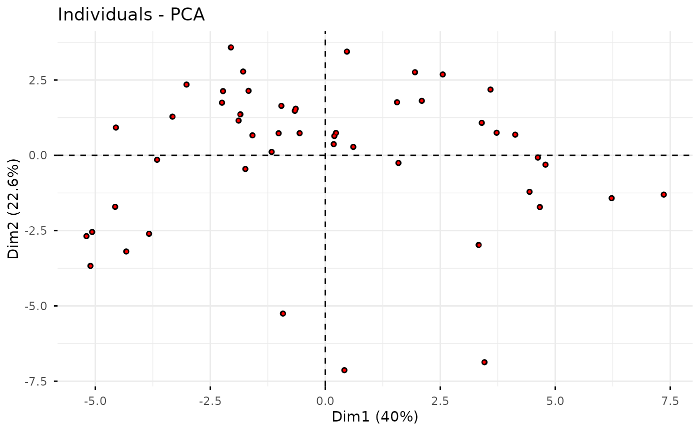
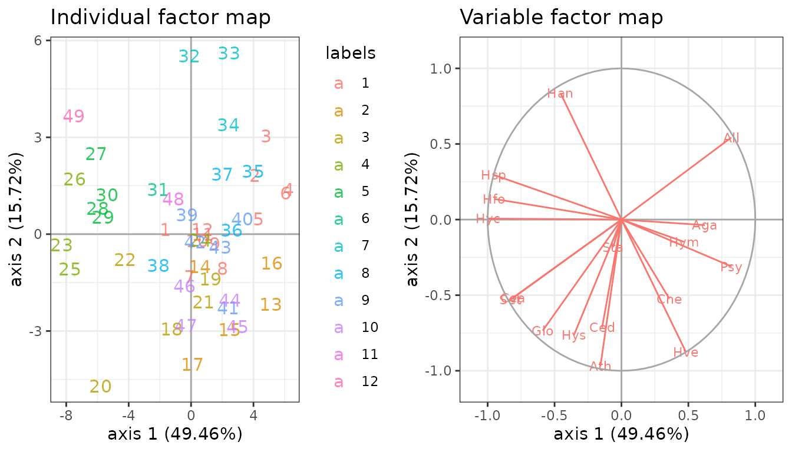

Dimension reduction of multivariate count data with PLN-PCA
PLN team
2022-08-25
Source:vignettes/PLNPCA.Rmd
PLNPCA.RmdPreliminaries
This vignette illustrates the standard use of the PLNPCA function and the methods accompanying the R6 Classes PLNPCAfamily and PLNPCAfit.
Requirements
The packages required for the analysis are PLNmodels plus some others for data manipulation and representation:
The main function PLNPCA integrates some features of the future package to perform parallel computing: you can set your plan now to speed the fit by relying on 2 workers as follows:
Data set
We illustrate our point with the trichoptera data set, a full description of which can be found in the corresponding vignette. Data preparation is also detailed in the specific vignette.
data(trichoptera)
trichoptera <- prepare_data(trichoptera$Abundance, trichoptera$Covariate)The trichoptera data frame stores a matrix of counts (trichoptera$Abundance), a matrix of offsets (trichoptera$Offset) and some vectors of covariates (trichoptera$Wind, trichoptera$Temperature, etc.)
Mathematical background
In the vein of Tipping and Bishop (1999), we introduce in Chiquet, Mariadassou, and Robin (2018) a probabilistic PCA model for multivariate count data which is a variant of the Poisson Lognormal model of Aitchison and Ho (1989) (see the PLN vignette as a reminder). Indeed, it can be viewed as a PLN model with an additional rank constraint on the covariance matrix \(\boldsymbol\Sigma\) such that \(\mathrm{rank}(\boldsymbol\Sigma)= q\).
This PLN-PCA model can be written in a hierarchical framework where a sample of \(p\)-dimensional observation vectors \(\mathbf{Y}_i\) is related to some \(q\)-dimensional vectors of latent variables \(\mathbf{W}_i\) as follows: \[\begin{equation} \begin{array}{rcl} \text{latent space } & \mathbf{W}_i \quad \text{i.i.d.} & \mathbf{W}_i \sim \mathcal{N}(\mathbf{0}_q, \mathbf{I}_q) \\ \text{parameter space } & \mathbf{Z}_i = {\boldsymbol\mu} + \mathbf{B}^\top \mathbf{W}_i & \\ \text{observation space } & Y_{ij} | Z_{ij} \quad \text{indep.} & Y_{ij} | Z_{ij} \sim \mathcal{P}\left(\exp\{Z_{ij}\}\right) \end{array} \end{equation}\]
The parameter \({\boldsymbol\mu}\in\mathbb{R}^p\) corresponds to the main effects, the \(p\times q\) matrix \(\mathbf{B}\) to the loadings in the parameter spaces and \(\mathbf{W}_i\) to the scores of the \(i\)-th observation in the low-dimensional latent subspace of the parameter space. The dimension of the latent space \(q\) corresponds to the number of axes in the PCA or, in other words, to the rank of \(\mathbf{B}\mathbf{B}^\intercal\). An hopefully more intuitive way of writing this model is the following: \[\begin{equation} \begin{array}{rcl} \text{latent space } & \mathbf{Z}_i \sim \mathcal{N}({\boldsymbol\mu},\boldsymbol\Sigma), \qquad \boldsymbol\Sigma = \mathbf{B}\mathbf{B}^\top \\ \text{observation space } & Y_{ij} | Z_{ij} \quad \text{indep.} & Y_{ij} | Z_{ij} \sim \mathcal{P}\left(\exp\{Z_{ij}\}\right), \end{array} \end{equation}\] where the interpretation of PLN-PCA as a rank-constrained PLN model is more obvious.
Covariates and offsets
Just like PLN, PLN-PCA generalizes to a formulation close to a multivariate generalized linear model where the main effect is due to a linear combination of \(d\) covariates \(\mathbf{x}_i\) and to a vector \(\mathbf{o}_i\) of \(p\) offsets in sample \(i\). The latent layer then reads \[\begin{equation} \mathbf{Z}_i \sim \mathcal{N}({\mathbf{o}_i + \mathbf{x}_i^\top\boldsymbol\Theta},\boldsymbol\Sigma), \qquad \boldsymbol\Sigma = \mathbf{B}\mathbf{B}^\top, \end{equation}\] where \(\boldsymbol\Theta\) is a \(d\times p\) matrix of regression parameters.
Optimization by Variational inference
Dimension reduction and visualization is the main objective in (PLN)-PCA. To reach this goal, we need to first estimate the model parameters. Inference in PLN-PCA focuses on the regression parameters \(\boldsymbol\Theta\) and on the covariance matrix \(\boldsymbol\Sigma\). Technically speaking, we adopt a variational strategy to approximate the log-likelihood function and optimize the consecutive variational surrogate of the log-likelihood with a gradient-ascent-based approach. To this end, we rely on the CCSA algorithm of Svanberg (2002) implemented in the C++ library (Johnson 2011), which we link to the package. Technical details can be found in Chiquet, Mariadassou, and Robin (2018).
Analysis of trichoptera data with a PLNPCA model
In the package, the PLNPCA model is adjusted with the function PLNPCA, which we review in this section. This function adjusts the model for a series of value of \(q\) and provides a collection of objects PLNPCAfit stored in an object with class PLNPCAfamily.
The class PLNPCAfit inherits from the class PLNfit, so we strongly recommend the reader to be comfortable with PLN and PLNfit before using PLNPCA (see the PLN vignette).
A model with latent main effects for the Trichoptera data set
Adjusting a collection of fits
We fit a collection of \(q\) models as follows:
##
## Initialization...
##
## Adjusting 4 PLN models for PCA analysis.
## Rank approximation = 1
Rank approximation = 4
Rank approximation = 2
Rank approximation = 3
## Post-treatments
## DONE!Note the use of the formula object to specify the model, similar to the one used in the function PLN.
Structure of PLNPCAfamily
The PCA_models variable is an R6 object with class PLNPCAfamily, which comes with a couple of methods. The most basic is the show/print method, which sends a brief summary of the estimation process:
PCA_models## --------------------------------------------------------
## COLLECTION OF 4 POISSON LOGNORMAL MODELS
## --------------------------------------------------------
## Task: Principal Component Analysis
## ========================================================
## - Ranks considered: from 1 to 4
## - Best model (greater BIC): rank = 4
## - Best model (greater ICL): rank = 3One can also easily access the successive values of the criteria in the collection
| param | nb_param | loglik | BIC | ICL |
|---|---|---|---|---|
| 1 | 34 | -1042.4247 | -1108.5857 | -1118.2862 |
| 2 | 50 | -729.9197 | -827.2152 | -862.5333 |
| 3 | 65 | -637.9350 | -764.4192 | -824.3428 |
| 4 | 79 | -600.3210 | -754.0479 | -843.5442 |
A quick diagnostic of the optimization process is available via the convergence field:
| param | nb_param | iterations | status | message | |
|---|---|---|---|---|---|
| out | 1 | 34 | 383 | 4 | xtol_rel or xtol_abs was reached |
| elt | 2 | 50 | 487 | 4 | xtol_rel or xtol_abs was reached |
| elt.1 | 3 | 65 | 450 | 4 | xtol_rel or xtol_abs was reached |
| elt.2 | 4 | 79 | 671 | 4 | xtol_rel or xtol_abs was reached |
Comprehensive information about PLNPCAfamily is available via ?PLNPCAfamily.
Model selection of rank \(q\)
The plot method of PLNPCAfamily displays evolution of the criteria mentioned above, and is a good starting point for model selection:
plot(PCA_models)
Note that we use the original definition of the BIC/ICL criterion (\(\texttt{loglik} - \frac{1}{2}\texttt{pen}\)), which is on the same scale as the log-likelihood. A popular alternative consists in using \(-2\texttt{loglik} + \texttt{pen}\) instead. You can do so by specifying reverse = TRUE:
plot(PCA_models, reverse = TRUE)
In this case, the variational lower bound of the log-likelihood is hopefully strictly increasing (or rather decreasing if using reverse = TRUE) with the number of axes (or subspace dimension). Also note the (approximated) \(R^2\) which is displayed for each value of \(q\) (see (Chiquet, Mariadassou, and Robin 2018) for details on its computation).
From this plot, we can see that the best model in terms of BIC or ICL is obtained for a rank \(q=4\) or \(q=3\). We may extract the corresponding model with the method getBestModel("ICL"). A model with a specific rank can be extracted with the getModel() method:
myPCA_ICL <- getBestModel(PCA_models, "ICL")
myPCA_BIC <- getModel(PCA_models, 3) # getBestModel(PCA_models, "BIC") is equivalent here Structure of PLNPCAfit
Objects myPCA_ICL and myPCA_BIC are R6Class objects of class PLNPCAfit which in turns own a couple of methods, some inherited from PLNfit and some others specific, mostly for visualization purposes. The plot method provides individual maps and correlation circles as in usual PCA. If an additional classification exists for the observations – which is the case here with the available classification of the trapping nights – , it can be passed as an argument to the function.1
plot(myPCA_ICL, ind_cols = trichoptera$Group)
Among other fields and methods (see ?PLNPCAfit for a comprehensive view), the most interesting for the end-user in the context of PCA are
- the regression coefficient matrix
| (Intercept) | |
|---|---|
| Che | -7.5480411 |
| Hyc | -8.1540254 |
| Hym | -3.0623970 |
| Hys | -7.0090113 |
| Psy | -0.5245639 |
| Aga | -3.8371591 |
- the estimated covariance matrix \(\boldsymbol\Sigma\) with fixed rank

- the rotation matrix (in the latent space)
| PC1 | PC2 | PC3 | |
|---|---|---|---|
| Che | -0.2194914 | 0.3246593 | -0.0225150 |
| Hyc | -0.4246711 | -0.2678305 | 0.2040204 |
| Hym | -0.1334806 | 0.1434098 | 0.3032917 |
| Hys | -0.4380256 | 0.3524603 | 0.3085195 |
| Psy | 0.0487248 | 0.0224739 | -0.0682869 |
| Aga | 0.0513769 | 0.2646996 | 0.2189965 |
- the principal components values (or scores)
| PC1 | PC2 | PC3 |
|---|---|---|
| -1.724794 | -0.6171927 | 0.7267512 |
| 3.448546 | 0.8923275 | 2.1221903 |
| 7.508399 | -1.2272592 | 0.4728207 |
| 6.426458 | -1.1715451 | -1.7802495 |
| 4.607372 | 0.1545626 | -1.0363103 |
| 3.911698 | 0.8491524 | 0.4925444 |
PLNPCAfit also inherits from the methods of PLNfit (see the appropriate vignette). Most are recalled via the show method:
myPCA_ICL## Poisson Lognormal with rank constrained for PCA (rank = 3)
## ==================================================================
## nb_param loglik BIC ICL
## 65 -637.935 -764.419 -824.343
## ==================================================================
## * Useful fields
## $model_par, $latent, $latent_pos, $var_par, $optim_par
## $loglik, $BIC, $ICL, $loglik_vec, $nb_param, $criteria
## * Useful S3 methods
## print(), coef(), sigma(), vcov(), fitted()
## predict(), predict_cond(), standard_error()
## * Additional fields for PCA
## $percent_var, $corr_circle, $scores, $rotation, $eig, $var, $ind
## * Additional S3 methods for PCA
## plot.PLNPCAfit()Additional visualization
We provide simple plotting functions but a wealth of plotting utilities are available for factorial analyses results. The following bindings allow you to use widely popular tools to make your own plots: $eig, $var and $ind.
## All summaries associated to the individuals
str(myPCA_ICL$ind)## List of 4
## $ coord : num [1:49, 1:3] -1.72 3.45 7.51 6.43 4.61 ...
## ..- attr(*, "dimnames")=List of 2
## .. ..$ : chr [1:49] "1" "2" "3" "4" ...
## .. ..$ : chr [1:3] "Dim.1" "Dim.2" "Dim.3"
## $ cos2 : num [1:49, 1:3] 0.766 0.692 0.97 0.901 0.951 ...
## ..- attr(*, "dimnames")=List of 2
## .. ..$ : chr [1:49] "1" "2" "3" "4" ...
## .. ..$ : chr [1:3] "Dim.1" "Dim.2" "Dim.3"
## $ contrib: num [1:49, 1:3] 0.603 2.411 11.43 8.373 4.304 ...
## ..- attr(*, "dimnames")=List of 2
## .. ..$ : chr [1:49] "1" "2" "3" "4" ...
## .. ..$ : chr [1:3] "Dim.1" "Dim.2" "Dim.3"
## $ dist : Named num [1:49] 1.97 4.15 7.62 6.77 4.73 ...
## ..- attr(*, "names")= chr [1:49] "1" "2" "3" "4" ...
## Coordinates of the individuals in the principal plane
head(myPCA_ICL$ind$coord)## Dim.1 Dim.2 Dim.3
## 1 -1.724793 -0.6171927 0.7267512
## 2 3.448546 0.8923275 2.1221903
## 3 7.508399 -1.2272592 0.4728207
## 4 6.426458 -1.1715451 -1.7802495
## 5 4.607372 0.1545626 -1.0363103
## 6 3.911698 0.8491524 0.4925444You can also use high level functions from the factoextra package to extract relevant informations
## Eigenvalues
factoextra::get_eig(myPCA_ICL)## eigenvalue variance.percent cumulative.variance.percent
## Dim.1 493.2429 38.42077 38.42077
## Dim.2 315.6392 24.58647 63.00724
## Dim.3 222.5204 17.33306 80.34030
## Variables
factoextra::get_pca_var(myPCA_ICL)## Principal Component Analysis Results for variables
## ===================================================
## Name Description
## 1 "$coord" "Coordinates for the variables"
## 2 "$cor" "Correlations between variables and dimensions"
## 3 "$cos2" "Cos2 for the variables"
## 4 "$contrib" "contributions of the variables"
## Individuals
factoextra::get_pca_ind(myPCA_ICL)## Principal Component Analysis Results for individuals
## ===================================================
## Name Description
## 1 "$coord" "Coordinates for the individuals"
## 2 "$cos2" "Cos2 for the individuals"
## 3 "$contrib" "contributions of the individuals"And some of the very nice plotting methods such as biplots, correlation circles and scatter plots of the scores.
factoextra::fviz_pca_biplot(myPCA_ICL)
factoextra::fviz_pca_var(myPCA_ICL)
factoextra::fviz_pca_ind(myPCA_ICL)
Projecting new data in the PCA space
You can project new data in the PCA space although it’s slightly involved at the moment. We demonstrate that by projecting the original data on top of the original graph. As expected, the projections of the new data points (small red points) are superimposed to the original data points (large black points).
## Project newdata into PCA space
new_scores <- myPCA_ICL$project(newdata = trichoptera)
## Overprint
p <- factoextra::fviz_pca_ind(myPCA_ICL, geom = "point", col.ind = "black")
factoextra::fviz_add(p, new_scores, geom = "point", color = "red",
addlabel = FALSE, pointsize = 0.5)
A model accounting for meteorological covariates
A contribution of PLN-PCA is to let the possibility to taking into account some covariates in the parameter space. Such a strategy often completely changes the interpretation of PCA. Indeed, the covariates are often responsible for some strong structure in the data. The effect of the covariates should be removed since they are often quite obvious for the analyst and may hide some more important and subtle effects.
In the case at hand, the covariates corresponds to the meteorological variables. Let us try to introduce some of them in our model, for instance, the temperature, the wind and the cloudiness. This can be done thanks to the model formula:
PCA_models_cov <-
PLNPCA(
Abundance ~ 1 + offset(log(Offset)) + Temperature + Wind + Cloudiness,
data = trichoptera,
ranks = 1:4
)##
## Initialization...
##
## Adjusting 4 PLN models for PCA analysis.
## Rank approximation = 2
Rank approximation = 3
Rank approximation = 4
Rank approximation = 1
## Post-treatments
## DONE!Again, the best model is obtained for \(q=3\) classes.
plot(PCA_models_cov)
myPCA_cov <- getBestModel(PCA_models_cov, "ICL")Suppose that we want to have a closer look to the first two axes. This can be done thanks to the plot method:
gridExtra::grid.arrange(
plot(myPCA_cov, map = "individual", ind_cols = trichoptera$Group, plot = FALSE),
plot(myPCA_cov, map = "variable", plot = FALSE),
ncol = 2
)
We can check that the fitted value of the counts – even with this low-rank covariance matrix – are close to the observed ones:
data.frame(
fitted = as.vector(fitted(myPCA_cov)),
observed = as.vector(trichoptera$Abundance)
) %>%
ggplot(aes(x = observed, y = fitted)) +
geom_point(size = .5, alpha =.25 ) +
scale_x_log10(limits = c(1,1000)) +
scale_y_log10(limits = c(1,1000)) +
theme_bw() + annotation_logticks()fitted value vs. observation
When you are done, do not forget to get back to the standard sequential plan with future.
future::plan("sequential")References
With our PLN-PCA (and any pPCA model for count data, where successive models are not nested), it is important to performed the model selection of \(q\) prior to visualization, since the model with rank \(q=3\) is not nested in the model with rank \(q=4\). Hence, percentage of variance must be interpreted with care: it sums to 100% but must be put in perspective with the model \(R^2\), giving an approximation of the total percentage of variance explained with the current model.↩︎